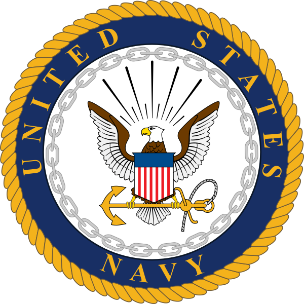
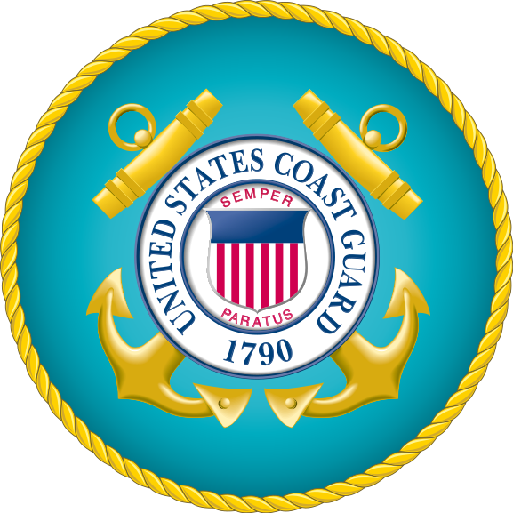
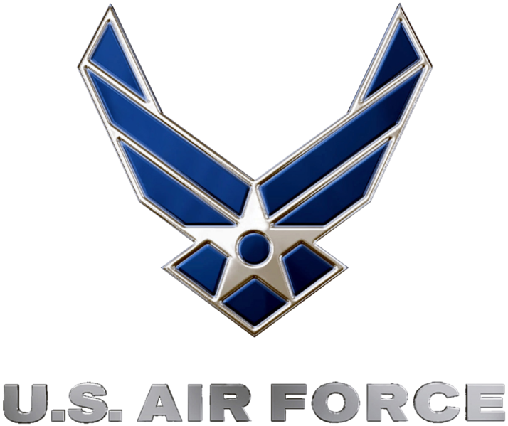

The 5 Branches of Military
THE ARMY
The Army serves as the ground force. Troops are deployed with heavy artillery, vehicles, and weapons (including nuclear). The Army is the largest branch of the military and gets support from the federal government’s Army Reserves and each state’s National Guard.

THE NAVY
The Navy serves as the guardians over sea. The Navy lends support to the Air Force, using aircraft carriers that provide runways where they are usually impossible. The sea is used as cover while Navy ships attack on-land enemies from far away. The Navy uses heavy weapons, including missiles. Navy ships also provide transportation for the Marines to areas in battle.
THE MARINES
The Marines work in every location; their job is to create a route to attack the enemy. When Marines aren’t on land or water, they are using air vehicles like attack helicopters, and fighter/bomber aircrafts. They take support from the Navy for administrative support. The Navy provides the Marines with medical assistance.
THE COAST GUARD
The Coast Guard, at times of peace, enforce the law specifically in the area of boating safety and illegal immigration control. The Coast Guard also participates in sea rescues. They use boats and aircrafts; when necessary, the president can issue the Coast Guard to transfer to the Navy. The Coast Guard Commandant commands the entire Coast Guard.
THE AIR FORCE
The Air Force originally supported the Army until it’s potential was recognized and it became a separate branch. Their primary goal now is the defend the United States via a variety of air vehicles; Fighter, Tanker, Bombers, and transport aircrafts are all specialized air vehicles that the Air Force uses. In addition to defense, the Air Force controls military satellites and nuclear missiles.
